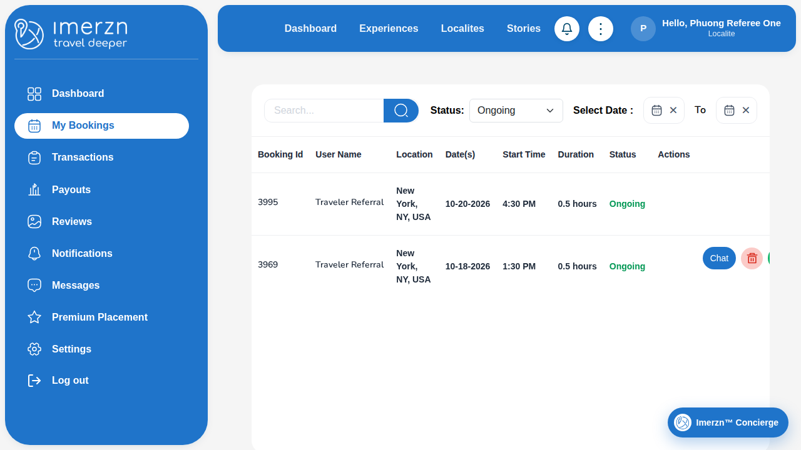

Passed: 21 | Failed: 1 | Flaky: 1 | Skipped: 0
Error: Step "Referee: complete booking 3995" failed: locator.click: Timeout 15000ms exceeded.
Call log:
- waiting for getByRole('main').getByRole('row').filter({ has: getByRole('cell', { name: '3995', exact: true }) }).getByRole('button', { name: 'Complete booking', exact: true })
at ../helpers/step.ts:17
15 | const message = error instanceof Error ? error.message : String(error);
16 | console.error(`[FAILED] ${title}: ${message}`);
> 17 | throw new Error(`Step "${title}" failed: ${message}`, { cause: error });
| ^
18 | }
19 | });
20 | }
at /home/runner/work/Imerzn-WebTest/Imerzn-WebTest/helpers/step.ts:17:13
at /home/runner/work/Imerzn-WebTest/Imerzn-WebTest/tests/localite/referral-program.spec.ts:106:3
[cause]: TimeoutError: locator.click: Timeout 15000ms exceeded.
Call log:
- waiting for getByRole('main').getByRole('row').filter({ has: getByRole('cell', { name: '3995', exact: true }) }).getByRole('button', { name: 'Complete booking', exact: true })
at LocaliteBookingsPage.completeBooking (/home/runner/work/Imerzn-WebTest/Imerzn-WebTest/pages/localite/localite-bookings-page.ts:56:105)
at /home/runner/work/Imerzn-WebTest/Imerzn-WebTest/tests/localite/referral-program.spec.ts:111:24
at /home/runner/work/Imerzn-WebTest/Imerzn-WebTest/helpers/step.ts:12:14
at /home/runner/work/Imerzn-WebTest/Imerzn-WebTest/tests/localite/referral-program.spec.ts:106:3
